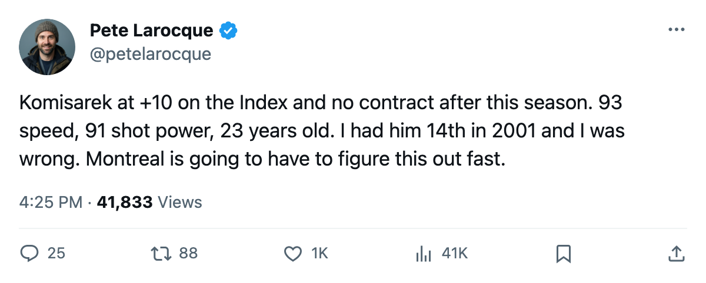
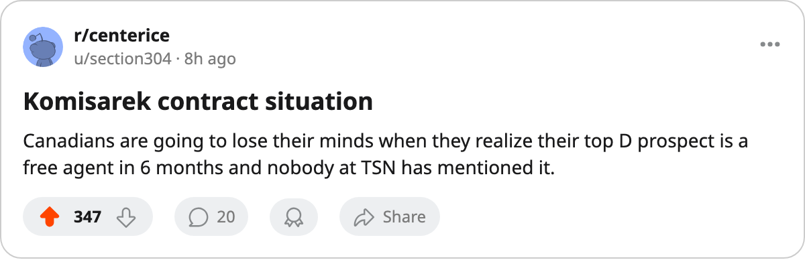

I Saw Him When: Mike Komisarek
The 7th pick of 2001 is +10 on the Development Index, carries a 92 potential, and has no contract after this season.
 Pete LarocqueScouting editor · The Prospect File
Pete LarocqueScouting editor · The Prospect File
Mike Komisarek81 sat on my board at 14th in the 2001 mock. Montreal took him 7th. I was too low on him, which happens, but the gap between where I had him and where the Bureau's potential number says he's going is the story this week.
Mike Komisarek is 23 years old, 225 pounds, shoots right, and wears a  Montreal Canadiens sweater with a contract that has 0 years left. His overall today reads 80. The Book's base grade underneath that is 77. The Development Index has him at +10, one of the biggest jumps in the league right now. His potential sits at 92.
Montreal Canadiens sweater with a contract that has 0 years left. His overall today reads 80. The Book's base grade underneath that is 77. The Development Index has him at +10, one of the biggest jumps in the league right now. His potential sits at 92.
Here's what I saw when. The 2003-04 season. 82 games, 15 goals, 67 assists, 82 points, 30.4 minutes a night. A defenseman from West Islip, New York, drafted 7th overall out of the University of Michigan, who had posted 3 points in 24 games the year before, went out and scored 82. The Bureau printed a potential above 90 off that season and kept it there.
This season he's at 19 points in 22 games, 4 goals and 15 assists, 30.7 minutes a night. That's his highest ice time in the league. The Index +10 is earned: his overall is 80, his base is 77, and the form term is pushing him toward a grade the Bureau said years ago he'd reach.
The attribute grades tell you why. Speed at 93. Shot power at 91. Acceleration at 88. Checking at 87. Those are not the numbers of a depth defenseman. A man with 93 speed and 91 shot power who plays 30.7 minutes a night is a top-pairing offensive defenseman in every league I've ever scouted. His weaknesses are in the corners and the faceoff circle: FACE at 54, SPBI at 52, FIGH at 51. He doesn't win draws and he doesn't fight. He skates and he shoots and his team builds around that.
The contract is the part that makes me keep coming back to him. $1.10M with 0 years left means Montreal has a decision to make before the Bureau's next edition of the Book. A 23-year-old defenseman with a 92 potential and a +10 on the Index will not sign at $1.10M again. The Development Index risers at under-covered clubs thread I ran on November 13 named five names. Komisarek was one of them. He's the one with the biggest Index jump and the shortest leash on his contract.
What does the Bureau's potential of 92 mean for a man already at 80 overall? It says the base hasn't caught up yet. The Book thinks Komisarek's true level is somewhere between 80 and 92, and the form is climbing toward it. If he holds this pace and the Index keeps him there, the base moves. A base at 80 with a potential of 92 is a different conversation from a base at 77 with a potential of 92. When the base catches the potential, he stops being a riser.
Montreal has not been covered much this season.  Jose Theodore87 at 87 is the name people know. Komisarek is the one I'd want to own in June when the contract situation sharpens. A player with 93 speed and 91 shot power at 23, playing 30.7 minutes a night with a 92 potential still open ahead of him, is not the kind of player who stays at $1.10M. The price isn't the point.
Jose Theodore87 at 87 is the name people know. Komisarek is the one I'd want to own in June when the contract situation sharpens. A player with 93 speed and 91 shot power at 23, playing 30.7 minutes a night with a 92 potential still open ahead of him, is not the kind of player who stays at $1.10M. The price isn't the point.

